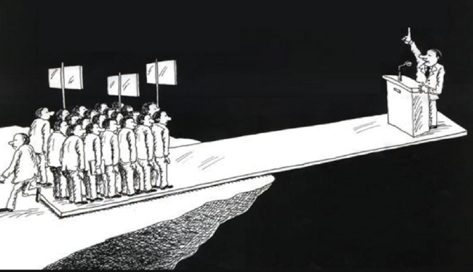

THE LEVERAGE

⚡ The Basic Idea
Most Americans already agree the system is broken.
Agreement alone doesn't change policy.
Organization does.
PHIERS works because it turns individual frustration into measurable political pressure — not noise, not hashtags, not comments online.
Documented direction.
When enough people document the same demand, it becomes something institutions cannot ignore.
The Basic Principle
Elected officials don't respond to ideas.
They respond to organized pressure.
When people act alone, their voices scatter.
When people align behind the same demand — and document it publicly — their voices combine into something much stronger.
That's leverage.
Documented Direction
Leverage begins when people document their priorities.
Signing the petition and completing the survey creates a public record of constituent direction. Not a poll. Not a comment section. A documented list of names, districts, and priorities.
When direction becomes measurable, institutions lose the ability to pretend they don't see it.
The District Threshold
Members of Congress pay closest attention to their own districts. That's where elections happen.
When 1,500 constituents in the same district document the same demand, something important happens.
The issue becomes impossible to ignore locally. Staff start responding. Town halls get called. Local media starts asking questions.
One district creates attention. Many districts create pressure. Enough districts create obligation.

National Alignment
When the same demand appears across districts, the pressure becomes national.
Research on successful movements shows a surprising pattern: when about 3.5% of a population actively participates, change becomes extremely difficult to stop.
For the United States, that's roughly 11.6 million people.
At that level, every district is affected. Every election becomes competitive. Every party has to respond.
Ignoring the demand becomes politically unsafe.
Why This Works
Elected officials respond to what affects their chances of staying in office.
When millions of constituents document the same demand, the political calculation changes.
Ignoring it becomes riskier than addressing it.
Elected officials don't respond to noise. They respond to numbers.
That's leverage.
Why Healthcare Comes First
Healthcare is the first focus because it touches nearly every American household — and it's one of the largest routine expenses families face.
When routine healthcare costs stabilize:
Workers gain the freedom to change jobs
Employers reduce overhead
Unions negotiate wages instead of defending benefits
Families regain breathing room
Fix the foundation, and everything built on top of it gets stronger. That's why leverage starts here.
Why This Moment Matters
Costs are rising. Trust is falling. The system feels unstable.
Moments like this go one of two ways. Systems either break under pressure — or they realign.
Realignment requires clarity. Clarity requires documentation. Documentation creates leverage.
This is where PHIERS begins.
▶ Watch: Why collective solutions win — and why this moment is different
What Happens When You Participate
When you sign the petition and complete the survey, your name and district become part of the documented public record.
As participation grows, results are compiled district by district. Representatives receive documented constituent direction. Town halls and public forums are triggered when thresholds are reached.
Your participation is not just a number.
It becomes a coordinate on a map of political pressure.
Three Steps. Real Leverage.
This is how individual participation becomes political gravity.
Your name + district on the public record. Not a like. Political leverage.
Define your priorities in your own words. Your responses become documented constituent direction.
Every person who understands the system makes the next conversation shorter.
What Happens After You Participate
As participation grows, the documented results are compiled and delivered to Congress — and presented at town halls and public forums in every district that crosses the 1,500-signature threshold.
Your responses become measurable constituent direction. Not another opinion online. A public record Congress has to answer to.
Who Has Engaged With the PHIERS Model
Letter of Support
Partial Listing on File
Formally Engaged
Support Letters on File
Independent Validation of Model
Cooperative Model Proven
3.5% Threshold Validated
The framework is designed to be evaluated, challenged, and improved in public view. These are the people and institutions that looked — and stayed.
Build the Leverage
When enough Americans align behind the same demand, Congress has two choices.
Act.
Or be replaced.